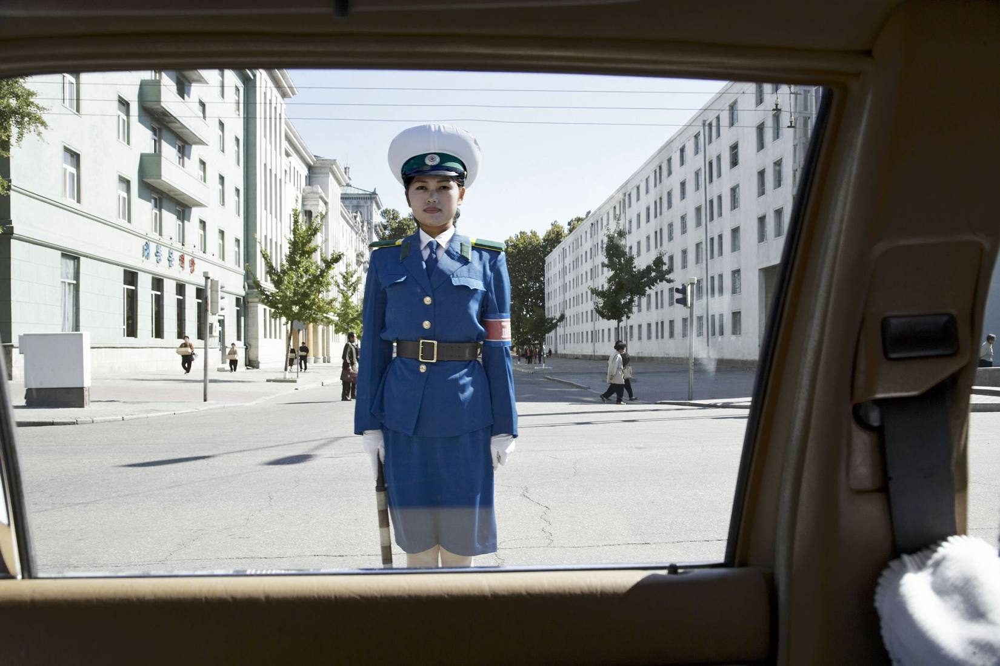
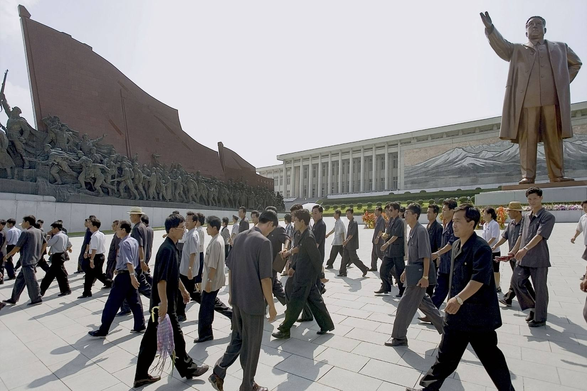
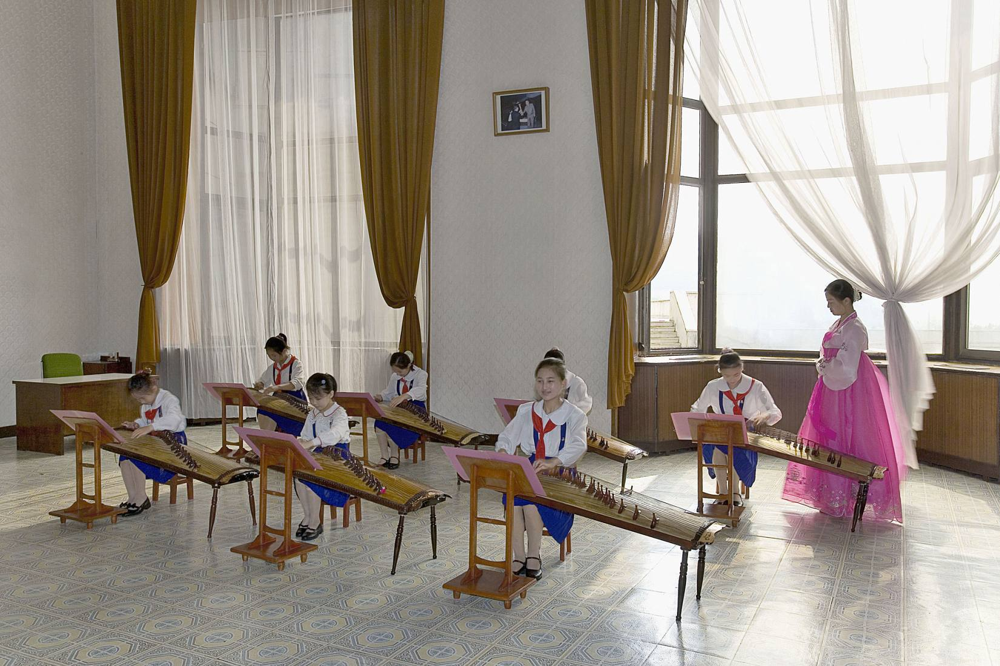
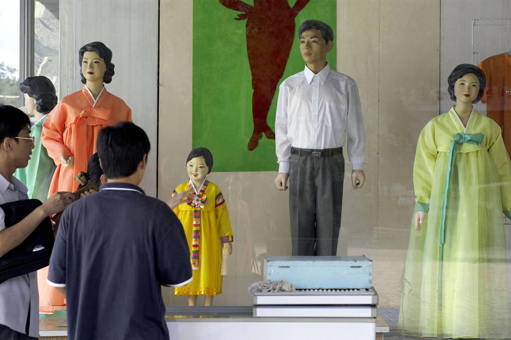
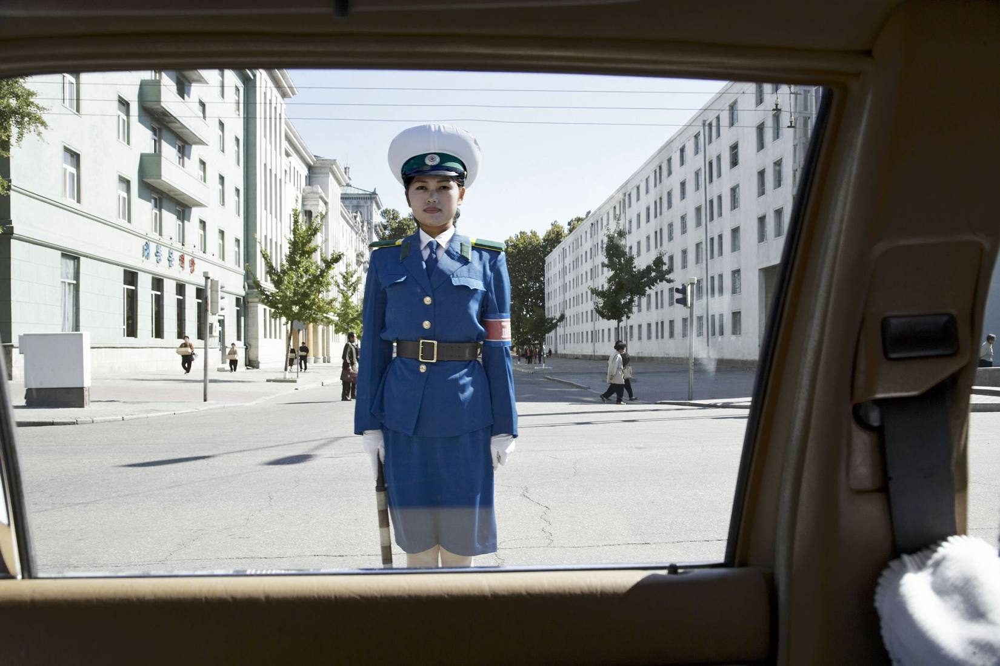
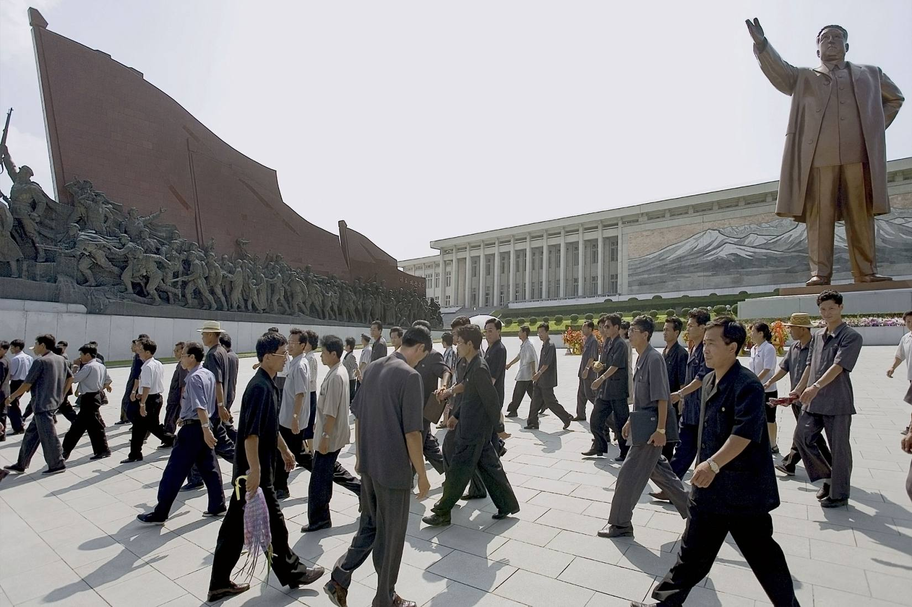
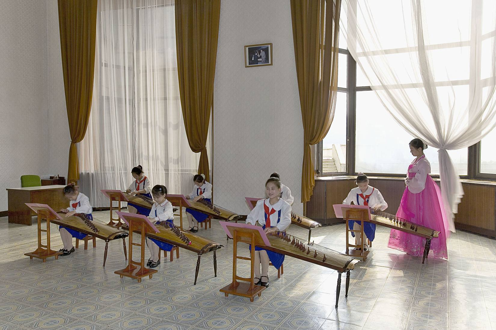
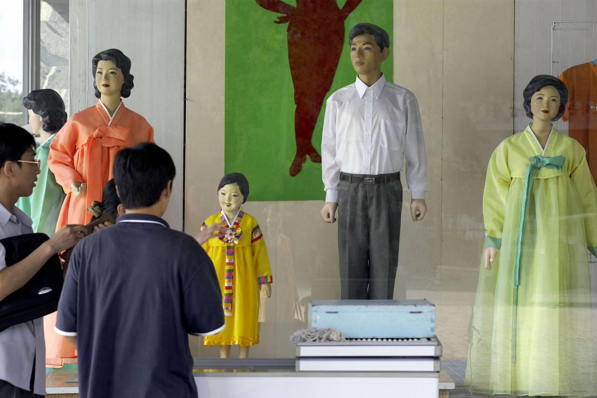

Alan Taylor
Apr 17, 2012
In a massive spectacle held in Pyongyang over the weekend, North Korea's new leader, Kim Jong Un, addressed an audience of thousands. His appearance was part of a week-long celebration of the birth of the nation's founder Kim Il Sung. Kim Jong Un, who was recently named "supreme commander," promised to continue a military-first policy, despite chronic economic and food shortages. Foreign photojournalists invited for the celebrations have been sending back hundreds of images -- but viewers back home must work to read between the lines. As you view these images, keep in mind that the photographers are strictly limited, only able to capture pre-approved subjects in sanctioned settings. These shapes, colors, and choreographed formations form the image North Korea wants to project. But even photographs like these can give us glimpses of an individual among the masses, inspiring empathy or curiosity. As we look at these members of a long-impoverished, tightly controlled society, we can only study their faces and imagine what they might truly be thinking.
 






